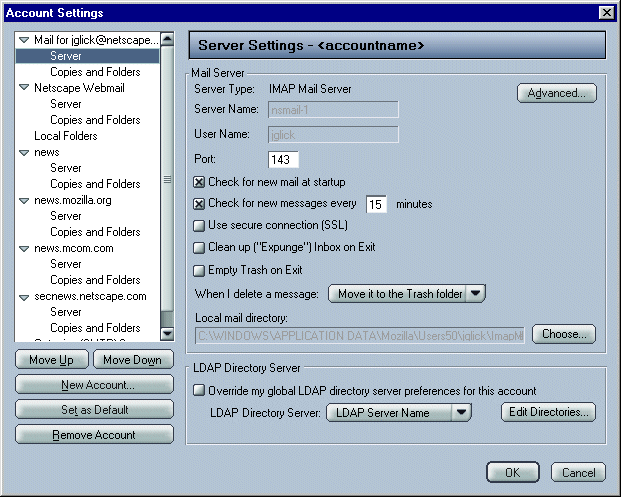
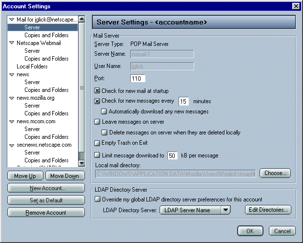

|
Mojo/Mozilla: Mail: LDAP |
UI Spec
|
|
Global Address Book/Account Specific LDAP - Version 2 |
Last Modification: |
|
Author: Jennifer Glick |
Status: Mostly Complete |
||||||||||||
|
Quicklinks: |
Feature Team
Please post all comments and suggestions regarding this spec to the newsgroup, netscape.public.mozilla.mail-news. |
This spec outlines a proposal in which Address Book settings and LDAP directory server settings are Global. Users are able to override the global LDAP directory server on a per account basis.
Preferences associated with the Address Book and LDAP directories are global for all accounts and are located in the Preferences: Mail and Newsgroups: Address Books panel. This includes Email Address Collection and Address Autocompletion settings.
Users can configure address autocompletion to search their "Local Address Books" and/or an "LDAP Directory Server". From this dialog, users can also specify which LDAP directory server will be used globally.
Note: Do we need: "When multiple addresses are found: (radiobutton) Show me a list of choices, (radiobutton) Accept what I have typed."?
Clicking the "Edit Directories..." button opens the "LDAP
Directory Servers" dialog. This dialog is used to select an LDAP
directory server or edit or delete an existing server, or add a new
server. 
Clicking "Add" or "Edit" from the LDAP Directory Servers dialog opens the "Directory Server Properties" dialog.

The "Find..." button retrieves Search Root information from the server and opens a dialog of available suffixes.

Advanced - used to configure more detailed LDAP directory settings.

On a per account basis, users can also override the Global LDAP settings and specify a different LDAP directory for different accounts. Each account can be associated with a different LDAP directory server. In the future, each account can be associated with multiple LDAP directory servers.
Each IMAP and POP (NNTP?) server panel will have an "LDAP Directory Server" group box.
Note: The LDAP Directory Server menu should have a "None" option so that users can choose to not have an LDAP server associated with a particular account.


Note: Looks like it might not fit on the POP dialog.
From the account level, users can also Add/Edit/Delete LDAP directory servers by selecting the "Edit Directories..." button.
Typedown pane -Edit->mail/news->Account Settings. One pane per account.
Directory Servers Dialog - Same as the screen shot.
Directory Servers properties dialog:
No offline tab for this release.
Advanced Options Dialog:
The "Do not display more than X results" in "Address Autocompletion" box is the preference for autocompletion where we will not show more than X results in the mail compose window.
The "Do not return more than X results" is the preference we set
to tell the server to return only X
results.